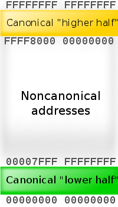

Linux Memory Management
64-bit (x86-64) memory
Though theoretically virtual addresses are 64 bits wide in 64-bit mode, current x86-64 implementations do not allow the entire virtual address space of 264 bytes (16 EB) to be used. In fact, 64-bit Linux allows only up to 128 TB of virtual address space for individual processes, and can address approximately 64 TB of physical memory, subject to processor and system limitations.
While working on x86-64 spec, AMD decided that operating systems and applications won't need 264 address space in the foreseeable future, and there is no reason to increase the complexity and cost of hardware. Thus, only 48 bits of virtual address are used in address translation. And since AMD spec also requires that bits 48-63 (i.e. most significant 16 bits) of any virtual address must be copies of bit 47 (like sign extension), the address space consists of "lower half" (0000000'00000000 - 00007FFF'FFFFFFFF) and "higher half" (FFFF8000'00000000 - FFFFFFFF'FFFFFFFF) with a big gap in the middle. Addresses complying with this rule are referred to as canonical form addresses. Even with this limitations we still have 256 TB of usable virtual address space, which is 65,536 times larger than 4 GB of 32-bit machines.
Linux OS takes the higher half of the address space for itself (kernel space) and leaves the lower half for app code, user mode stacks, heaps, etc (user space).
This architecture has two primary modes of operation:
- Long mode (primary mode; used by 64-bit OSs only) is a combination of the processor's native 64-bit mode and 32-bit/16-bit compatibility mode. 64-bit programs run under 64-bit mode, 32-bit and 16-bit protected mode apps (that do not need to use either real mode or virtual 8086 mode) run under compatibility mode. Real-mode programs and programs that use virtual 8086 mode at any time cannot be run in long mode unless those modes are emulated in software. However, such programs may be started from an OS running in long mode on processors supporting VT-x or AMD-V by creating a virtual processor running in the desired mode.
- Legacy mode is used by 16-bit ("protected mode" or "real mode") and 32-bit operating systems. In this mode, the processor acts like a 32-bit x86 proc, and only 16-bit and 32-bit code can be executed. Legacy mode allows for a maximum of 32 bit virtual addressing which limits the virtual address space to 4 GB. 64-bit programs cannot be run from legacy mode.
32-bit (x86) memory
32-bit architectures can reference 4 GB of physical memory (232). Processors that have an MMU (Memory Management Unit) support the concept of virtual memory: page tables are set up by the kernel which map "virtual addresses" to "physical addresses"; this means that each process can access 4 GB of mem, thinking it's the only proc running on the machine.
The virtual address to physical address mappings are done by the kernel. When a new proc is forked, the kernel creates a new set of page tables for the proc. The addresses referenced within a process in user-space are virtual addresses. They do not necessarily map directly to the same physical address. The virtual address is passed to the MMU which converts it to the proper physical address based on the tables set up by the kernel. Thus, 2 processes can refer to mem address 0x08329, but they would refer to 2 different locations in memory.
The Linux kernel splits the 4 GB virtual address space of a process in two parts: 3 GB and 1 GB. The lower 3 GB of the process virtual address space is accessible as the user-space virtual addresses and the upper 1 GB space is reserved for the kernel virtual addresses. This is true for all processes.
The kernel virtual area (3-4 GB address space) maps to the first 1 GB of physical RAM. The 3 GB addressable RAM available to each proc is mapped to the available physical RAM.
The basic problem: the kernel can address 1 GB of virtual addresses, which can translate to a maximum of 1 GB of physical memory. This is because the kernel directly maps all available kernel virtual space addresses to the available physical memory.
Solutions
There are following solutions:
- 2G/2G or 1G/3G split
- HIGHMEM solution for using up to 4 GB of memory
- HIGHMEM solution for using up to 64 GB of memory
PAE (Physical Address Extension) allows processors to access physical mem up to 64 GB (36 bits of address bus). However, since the virtual addr space is just 32 bits wide, each proc can't grow beyond 4 GB. The mechanism used to access mem from 4 GB to 64 GB is essentially the same as that of accessing the 1-4 GB RAM via the HIGHMEM solution.
| ZONE_DMA | 0 MB - 16 MB |
| ZONE_NORMAL | 16 MB - 896 MB |
| ZONE_HIGHMEM | 1 GB - 64 GB |
ZONE_DMA is used by some devices for data transfer and is mapped in the lower phys mem range (up to 16 MB). Memory in the ZONE_NORMAL region is mapped by the kernel in the upper region of the linear addr space. Most operations can only take place in ZONE_NORMAL; so this is the most performance critical zone. ZONE_NORMAL goes from 16 MB to 896 MB.
128 MB (on x86) is reserved for storing several kernel data structures that store info about the mem map and page tables. This means that the kernel virtual address in this 128 MB is not mapped to phys mem. Thus, even if you have 1 GB of physical RAM, only 896 MB will be actually available for ZONE_NORMAL.
To address memory from 1 GB onwards (ZONE_HIGHMEM), the kernel has to map pages from high mem into ZONE_NORMAL.
Config options for PAE kernel:
CONFIG_HIMEM64G=y
Config options for non-PAE kernel:
CONFIG_X86_PAE=n CONFIG_HIMEM64G=n CONFIG_HIMEM4G=y CONFIG_PARAVIRT=n CONFIG_PARAVIRT_GUEST=n CONFIG_XEN=n CONFIG_VMI=n
Memory page
(or just page, or virtual page) is a fixed-length contiguous block of virtual memory, described by a single entry in the page table. It's the smallest unit of data for memory management in a virtual memory OS. A page frame is the smallest fixed-length contiguous block of physical memory into which mem pages are mapped by OS.
In the past all mem pages had a uniform size, usually 4 KB (4096 bytes). Modern processors allow to use pages of several sizes, though 4 KB stays most popular for general purpose systems.
- x86 arch (32-bit) supports 4 KB, 2 MB (in PAE mode), 4 MB (in PSE mode).
- x86-64 arch (long mode) supports 4 KB, 2 MB, 1 GB (only CPUs with PDPE1GB flag).
PSE - Page Size Extension, a feature of old x86 processors (Pentium Pro, etc).
PAE - Physical Address Extension (sometimes "Page Address Extension") is a mem management feature for x86 arch. It defines a page table hierarchy of three levels (instead of two), with table entries of 64 bits each instead of 32, allowing these CPUs to directly access a physical address space larger than 4 GB.
The page table struct used by x86-64 CPUs [in long mode] extends the page table hierarchy to four levels, and uses additional physical address bits at all levels of the page table, extending the physical address space. It also uses the topmost bit of the 64-bit page table entry as a "no-execute bit" (NX), indicating that the code from the associated page cannot be executed. NX feature is also available in protected mode when these CPUs are running a 32-bit OS, provided that PAE is enabled.
To find your system's page size, try:
getconf PAGESIZE
Note that the use of larger pages usually requires elevated privileges, cooperation from the app making the large allocation (usually setting a flag to ask OS for huge pages), or manual admin config; paging (swapping) of large pages out to disk may not work.